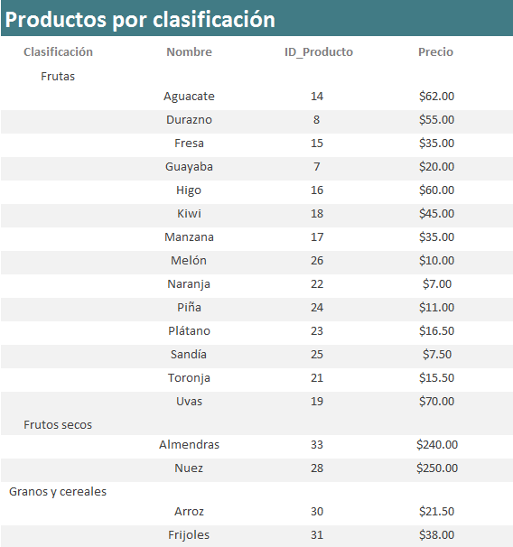
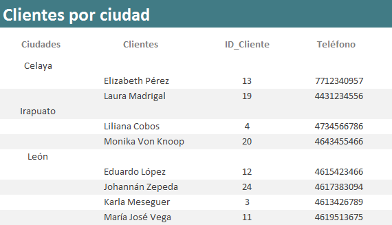
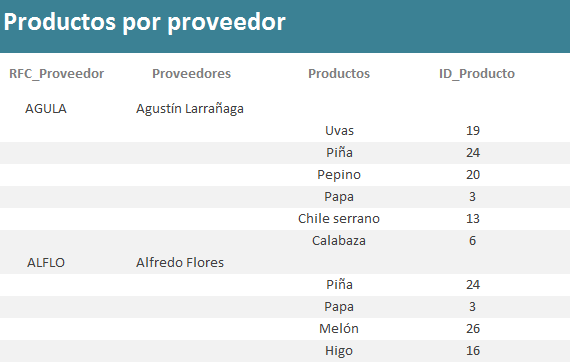

1.
Informe de Productos por Clasificación (Informe simple)
- Para la frutería y
verdulería "La Huerta" es muy importante conocer los productos que
tienen por clasificación. Es por esto que necesita que diseñes un
informe como el siguiente:

- Agrupa la
información por el campo de Clasificación.
- Ordena la
información en forma ascendente por el Nombre del
producto.
- Distribución:
En pasos y Orientación: Vertical
- El título del
informe deberá ser: Productos por
clasificación.
- Del menú, da clic en el botón de Cerrar vista previa de impresión,
para que muestre el informe en Vista diseño.

- Ajusta el tamaño de
los cuadros de texto y etiquetas para que se vean como se muestra
en la imagen.
- Alinea el
contenido de los cuadros de texto y etiquetas de la mejor forma
(izquierda / centrado / derecha).
- Cambia el diseño
de tu informe. Puedes cambiar también el color
y el tipo de letra que más te agrade.
- Checa tu
informe, dando clic en Ver > Vista Informes.
2.
Consulta de Clientes por Ciudad (Consulta simple)
- La frutería y
verdulería "La Huerta" necesita
saber los clientes que tiene por ciudad, por lo que se te pide
crees una consulta para generar el siguiente informe:

4. Consulta de Productos por proveedor (Consulta simple)
- La frutería y
verdulería "La Huerta" necesita saber los
productos que le surte cada proveedor, por lo que se te pide crees una
consulta para generar el siguiente informe:

|